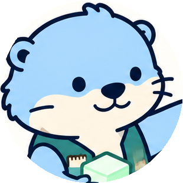

otter.대화는 사라져도 실행 이력은 남아, 다음 작업의 지식이 됩니다
쌓인 이력은 memory 도구로 다시 꺼내 쓰고, 지난 작업은 --resume으로 이어 갑니다
맥락에 맞는 스킬을 스스로 불러 쓰고, 무엇을 썼는지 항상 표시합니다
async function retry(fn, attempt = 0) {- const wait = 200 * attempt+ const wait = Math.min(200 * 2 ** attempt, 5_000)+ if (attempt >= MAX_ATTEMPTS) throw new RetryError() await sleep(wait) return fn().catch(() => retry(fn, attempt + 1)) }
읽기 전용 명령은 묻지 않고, sudo·강제 푸시는 항상 거부합니다
github.com/KimJiSeong1994/AgentFramework · MIT